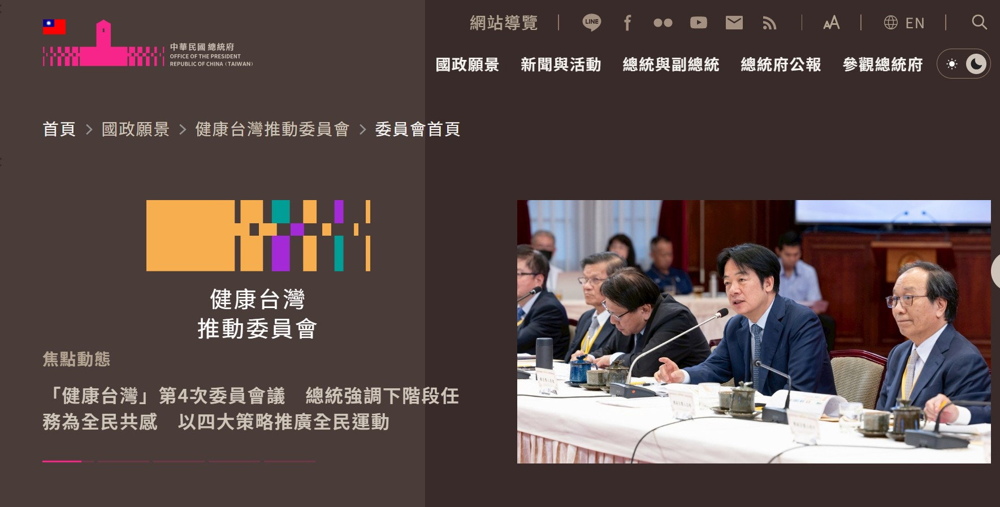
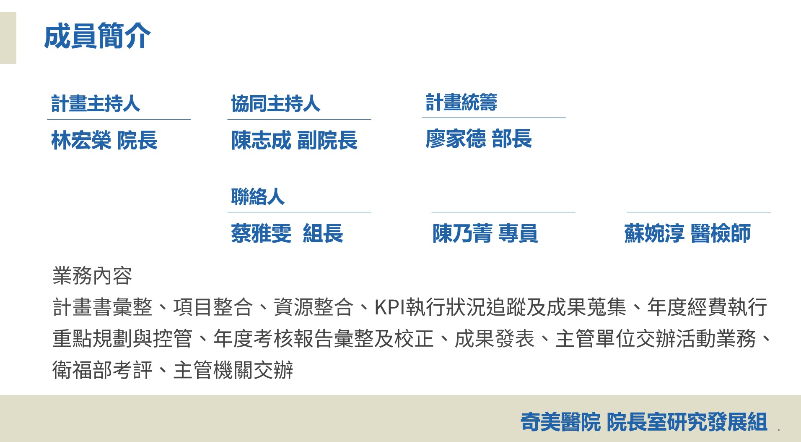

奇美醫院健康台灣深耕計畫
開啟主選單
計畫介紹
最新消息
執行成果
成員簡介
管考機制
執行進度
績效指標
預算執行率
指標填報
相關法規
下載專區
計畫介紹
最新消息
執行成果
成員簡介
管考機制
執行進度
績效指標
預算執行率
指標填報
相關法規
下載專區

範疇一
優化醫療工作條件
範疇二
規劃多元人才培訓
範疇三
導入智慧科技醫療
範疇四
社會責任醫療永續
最新消息
2025/03
【院長專欄】以病人為中心，以同仁為優先，擘劃智慧醫療新未來
2024/10
奇美醫院建立AI醫療應用圈，讓「A+」助理來服務！
2024/07
奇美醫院用GAI強化照護團隊，二十年磨劍練就病人優先系統
2024/07
台灣微軟專訪
奇美醫院以 Copilot 全面啟動數位醫療轉型，解決醫護人力短缺困境
2023/01
【院長專欄】追求健康生活 樂在團隊合作
執行成果
尚待建置
成員簡介

執行進度
尚待建置
績效指標
尚待建置
預算執行率
尚待建置
指標填報
尚待建置
相關法規
尚待建置
下載專區
2025/08
2025年最全AI工具清單